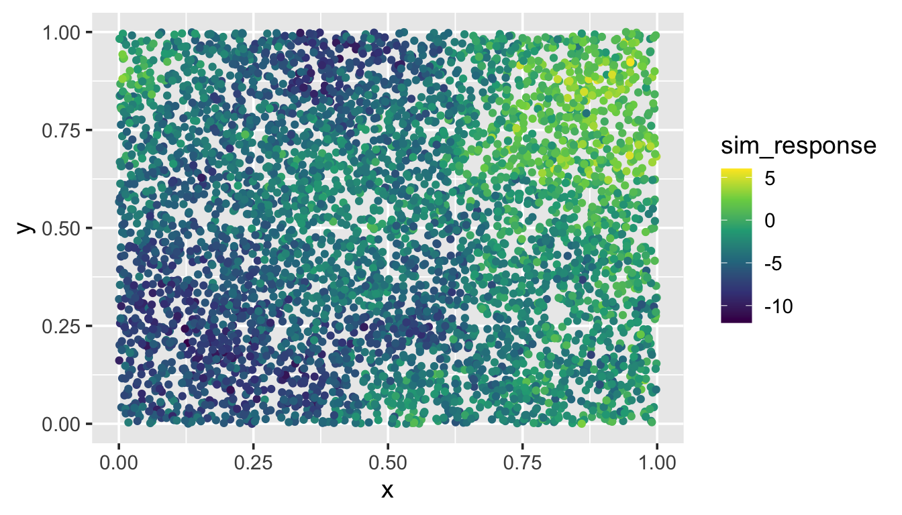
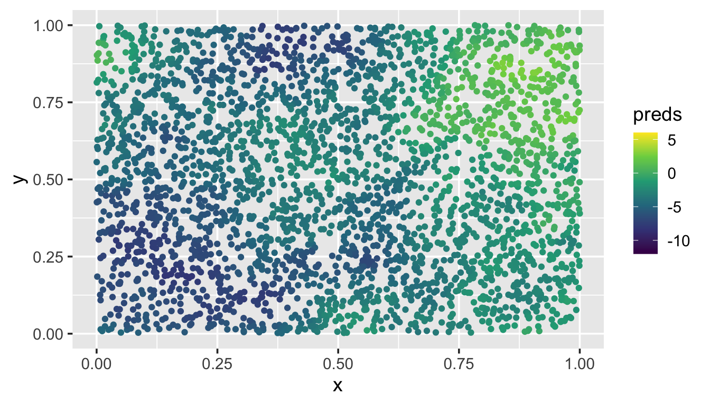

6 Large Data Sets
Throughout this section, we will use the spmodel package, the ggplot2 package, and the dplyr package:
Goals:
- Use the
localargument insplm()to fit a spatial linear model to a large data set. - Use the
localargument inpredict()(oraugment()) to make predictions for a large data set.
6.1 Large Data Sets in spmodel
For large observed data sets, fitting spatial linear models or making predictions is challenging because these operations require products that involve \(\boldsymbol{\Sigma}^{-1}\), which are computationally challenging to obtain. Typically, samples sizes approaching around 10,000 make model fitting or prediction infeasible on a standard computer in a reasonable amount of time (your definition of this may vary). This necessitates the use of model fitting and prediction tools that work for large data sets. spmodel offers big data methods for model fitting and prediction for point-referenced data via the local argument to splm() and predict().
6.1.1 Model Fitting
spmodel implements “local” spatial indexing as described by Ver Hoef et al. (2023). Observations are first assigned an index. Then for the purposes of model fitting, observations with different indexes are assumed uncorrelated. Assuming observations with different indexes are uncorrelated induces sparsity in the covariance matrix, which greatly reduces the computational time required for operations that involve \(\mathbf{\Sigma}^{-1}\). Models fit using spatial indexing are capable of fitting models with hundreds of thousands of observations relatively quickly. Ver Hoef et al. (2023) showed that in a variety of scenarios, spatial indexing yielded fixed effect confidence intervals with proper coverage.
To illustrate spatial indexing in spmodel, we first simulate a response variable sim_response with 5000 observations at random spatial locations in the unit square (sim_coords). Then we place the response and coordinates in a data.frame:
set.seed(18072023)
sim_params <- spcov_params("exponential", de = 7, ie = 2, range = 0.7)
n <- 5000
x <- runif(n)
y <- runif(n)
sim_coords <- data.frame(x, y)
sim_response <- sprnorm(sim_params, data = sim_coords,
xcoord = x, ycoord = y)
sim_data <- data.frame(sim_coords, sim_response)We visualize the data by running
ggplot(sim_data, aes(x = x, y = y, color = sim_response)) +
geom_point() +
scale_color_viridis_c(limits = c(-12, 6)) +
theme_gray(base_size = 14)
We provide more detail regarding using spmodel to simulate data in Chapter 8.
We then use splm() to fit a spatial model to sim_data, providing the xcoord and ycoord arguments because sim_data is a data.frame, not an sf object. To implement spatial indexing, we use the local argument to splm(). Setting local to TRUE chooses default spatial indexing settings. We fit the model and time it by running
The model with 5000 observations is fit in just 6.862 seconds.
When the sample size is larger than 5000 observations, splm() implements spatial indexing by default, as fitting time without spatial indexing becomes lengthy. This behavior can be overridden by explicitly setting local to FALSE.
A summary of the model fit yields
summary(bdmod)
#>
#> Call:
#> splm(formula = sim_response ~ 1, data = sim_data, spcov_type = "exponential",
#> xcoord = x, ycoord = y, local = TRUE)
#>
#> Residuals:
#> Min 1Q Median 3Q Max
#> -8.560 -2.510 -0.590 1.416 8.726
#>
#> Coefficients (fixed):
#> Estimate Std. Error z value Pr(>|z|)
#> (Intercept) -3.019 1.489 -2.028 0.0426 *
#> ---
#> Signif. codes: 0 '***' 0.001 '**' 0.01 '*' 0.05 '.' 0.1 ' ' 1
#>
#> Coefficients (exponential spatial covariance):
#> de ie range
#> 7.6598 1.5898 0.4432The other way to specify local in splm() is via a list object, which offers much more control and customization over the spatial indexing. To learn more, read about local in splm()’s help page by running ?splm.
Even for two separate data sets with the same sample size fit on the same machine, the computational time required to fit models via spatial indexing varies, depending on many factors like the number of iterations required for convergence and the number of observations assigned to each spatial index.
6.1.2 Local Prediction
Using the fitted model, Ver Hoef et al. (2023) evaluates the performance of local neighborhood prediction. Local neighborhood prediction only uses some of the observed data to predict for an unobserved location of interest. Local neighborhood prediction is capable of making predictions of hundreds of thousands of observations relatively quickly. Ver Hoef et al. (2023) showed that in a variety of scenarios, local neighborhood prediction yielded prediction intervals with proper coverage.
To illustrate local neighborhood prediction in spmodel, we first simulate 3000 new random spatial locations in the unit square (sim_coords). Then we place the coordinates in a data.frame and visualize:
To implement local neighborhood prediction, we use the local argument to predict() (or augment()). Setting local in predict() (or augment()) to TRUE chooses default local neighborhood prediction settings. We compute local neighborhood predictions at the unobserved locations in sim_preds and time it by running
The 3000 predictions are computed in just 6.177 seconds. We visualize them by running
ggplot(sim_preds, aes(x = x, y = y, color = preds)) +
geom_point() +
scale_color_viridis_c(limits = c(-12, 6)) +
theme_gray(base_size = 14)
These predictions at the unobserved locations closely match the pattern of the observed data.
The other way to specify local in predict() (or augment()) is via a list object, which offers much more control and customization over the local neighborhood prediction. To learn more, read about local in predict()’s (or augment()’s) help page by running ?predict.spmodel (or ?augment.spmodel).
6.2 R Code Appendix
library(spmodel)
library(ggplot2)
set.seed(18072023)
sim_params <- spcov_params("exponential", de = 7, ie = 2, range = 0.7)
n <- 5000
x <- runif(n)
y <- runif(n)
sim_coords <- data.frame(x, y)
sim_response <- sprnorm(sim_params, data = sim_coords,
xcoord = x, ycoord = y)
sim_data <- data.frame(sim_coords, sim_response)
ggplot(sim_data, aes(x = x, y = y, color = sim_response)) +
geom_point() +
scale_color_viridis_c(limits = c(-12, 6)) +
theme_gray(base_size = 14)
fit_start_time <- proc.time()
bdmod <- splm(sim_response ~ 1, data = sim_data,
spcov_type = "exponential",
xcoord = x, ycoord = y,
local = TRUE)
fit_end_time <- proc.time()
fit_end_time - fit_start_time
summary(bdmod)
n_pred <- 3000
x_pred <- runif(n_pred)
y_pred <- runif(n_pred)
sim_preds <- tibble::tibble(x = x_pred, y = y_pred)
pred_start_time <- proc.time()
sim_preds$preds <- predict(bdmod, newdata = sim_preds, local = TRUE)
pred_end_time <- proc.time()
pred_end_time - pred_start_time
ggplot(sim_preds, aes(x = x, y = y, color = preds)) +
geom_point() +
scale_color_viridis_c(limits = c(-12, 6)) +
theme_gray(base_size = 14)